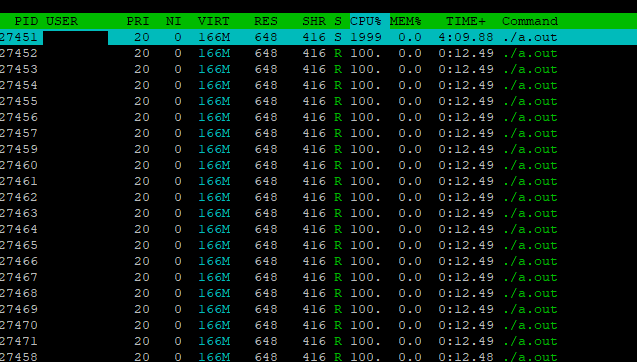

a.out 是一个单进程多线程程序。
在htop下看到了多个a.out有不同的PID

此时查看 /proc/<PID> 目录发现， /proc/<PID>/task 目录下有各个线程的子目录。
获取进程id用 getpid 可以在用户态直接调用。获取线程 id 的函数 gettid 在用户态不能使用。我们可以这样
#include <sys/syscall.h>
printf("%d %d\n,",getpid(),syscall(SYS_gettid));
那么 htop 是如何做到的呢？
在其源码中并没有 grep 到 gettid 相关的片段，其文档中提到了是通过 /proc/<PID>/task 读取的（待考）。
以及 ps -aux ,top 命令只显示 进程ID
如果要用ps看线程，ps -eLf